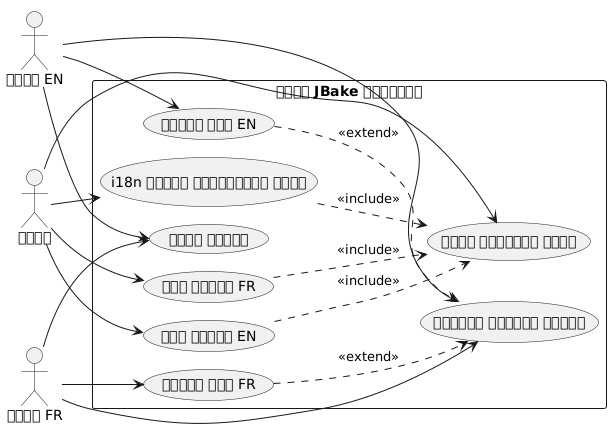
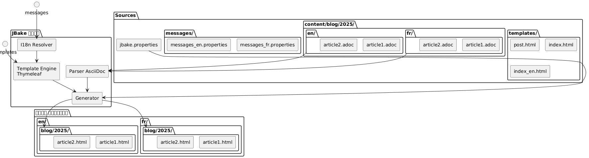
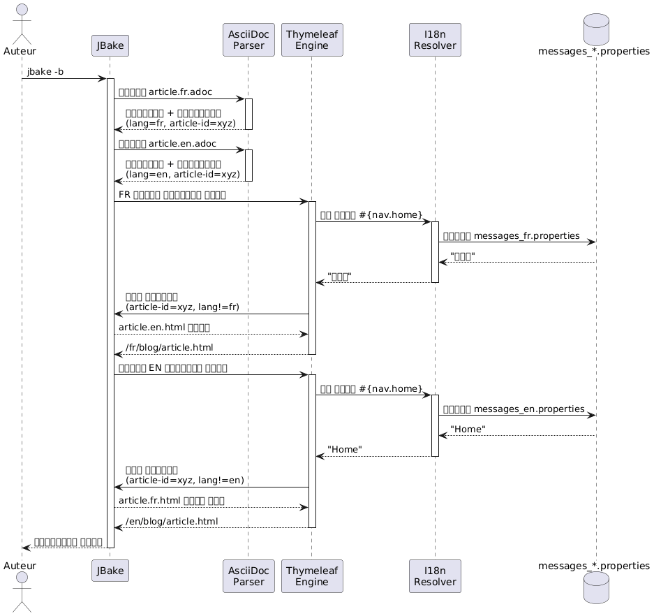
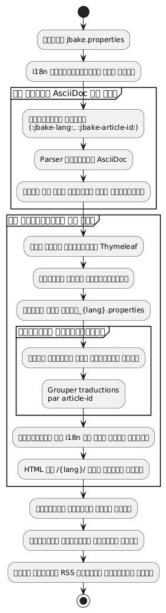
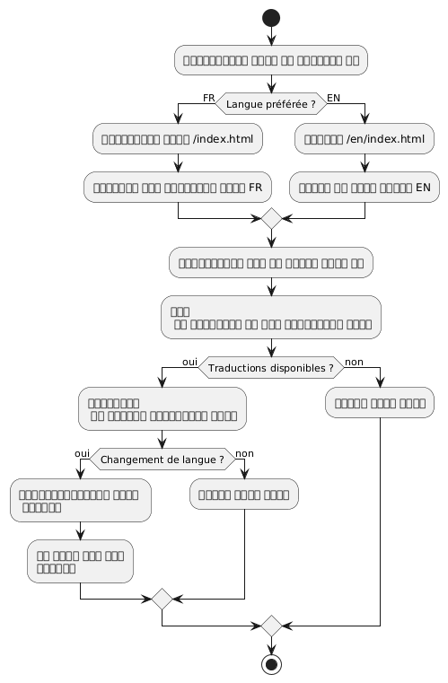
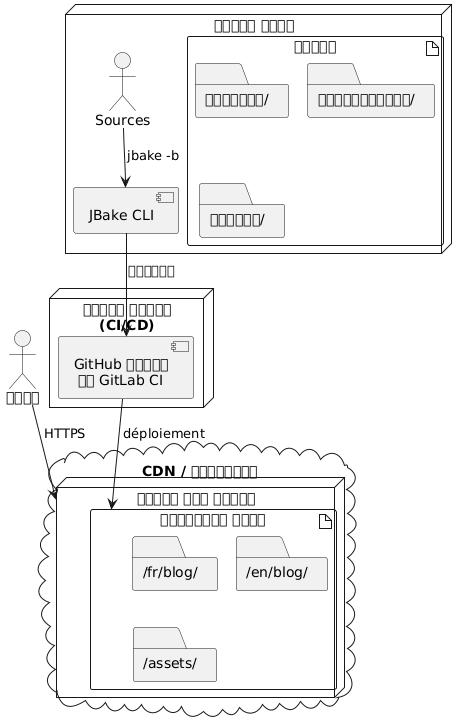

JBake की स्थिर साइट के साथ Thymeleaf का अंतर्राष्ट्रीयीकरण
प्रकाशित: 20 October 2025
परिचय
अंतर्राष्ट्रीयीकरण (i18n) एक स्थिर वेबसाइट का प्रतीत होता है पहल में जटिल हो सकता है, लेकिन JBake को Thymeleaf के साथ संयोजित करने से बहुभाषी साइट बनाने के लिए सुंदर समाधान प्रदान किए जाते हैं। इस आलेख में, मैं आपको दिखाऊँगा कि मैंने अपने ब्लॉग पर i18n को कैसे लागू किया, टेम्पलेटिंग और विभिन्न भाषाओं में लेखों के प्रबंधन दोनों को कवर करते हुए।
यूज़ केस आरेख (Use Case)

अंतर्राष्ट्रीयकरण की आर्किटेक्चर
हमारी पद्धति दो स्तम्भों पर आधारित है :
-
टेम्प्लेटिंग का अंतर्राष्ट्रीयीकरण: UI तत्वों के लिए Thymeleaf संदेश फ़ाइलों का उपयोग
-
सामग्री का अंतर्राष्ट्रीयीकरणभाषा के अनुसार आर्टिकल्स का एक समर्पित फ़ोल्डर संरचना में संगठन
संरचना आरेख (फ़ाइलों का संगठन)

यह दृष्टिकोण क्यों?
यह अलगाव करने की अनुमति देता है:
-
भाषा की परवाह किए बिना इंटरफ़ेस में निरंतरता बनाए रखें
-
लेखों की सामग्री और उनके अनुवाद को स्वतंत्र रूप से प्रबंधित करें
-
बड़े रिफैक्टरिंग किए बिना नई भाषाएँ जोड़ना आसान बनाएँ
-
केवल कुछ भाषाओं में उपलब्ध आइटम को अनुमति दें
घटक आरेख

Thymeleaf के साथ टेम्प्लेटिंग का अंतर्राष्ट्रीयकरण
संदेश फ़ाइलों की संरचना
पहला चरण प्रत्येक समर्थित भाषा के लिए गुणधर्म फ़ाइलों को बनाने का है:
src/jbake/templates/
├── messages.properties # Fallback par défaut
├── messages_fr.properties # Français
├── messages_en.properties # Anglais
└── messages_de.properties # Allemandसंदेश फाइलों की सामग्री
यहाँ एक फ़ाइल का उदाहरण है`messages_fr.properties`:
# Navigation
nav.home=Accueil
nav.blog=Blog
nav.about=À propos
nav.contact=Contact
# Articles
article.readmore=Lire la suite
article.published=Publié le
article.tags=Étiquettes
article.also.available=Également disponible en
# Interface
site.title=Mon Blog Technique
site.description=Partage de connaissances et expériences
footer.copyright=© 2025 Tous droits réservés
search.placeholder=Rechercher un article...और उसका अंग्रेज़ी समकक्ष`messages_en.properties`:
# Navigation
nav.home=Home
nav.blog=Blog
nav.about=About
nav.contact=Contact
# Articles
article.readmore=Read more
article.published=Published on
article.tags=Tags
article.also.available=Also available in
# Interface
site.title=My Tech Blog
site.description=Sharing knowledge and experiences
footer.copyright=© 2025 All rights reserved
search.placeholder=Search articles...टेम्प्लेट्स में उपयोग
अपने Thymeleaf टेम्प्लेट में, सिंटैक्स का उपयोग करें।`#{}`संदेशों तक पहुँचने के लिए :
<!DOCTYPE html>
<html xmlns:th="http://www.thymeleaf.org">
<head>
<title th:text="#{site.title}">Mon Blog</title>
<meta name="description" th:content="#{site.description}" />
</head>
<body>
<nav>
<a th:href="@{/}" th:text="#{nav.home}">Accueil</a>
<a th:href="@{/blog/}" th:text="#{nav.blog}">Blog</a>
<a th:href="@{/about.html}" th:text="#{nav.about}">À propos</a>
</nav>
<footer>
<p th:text="#{footer.copyright}">Copyright</p>
</footer>
</body>
</html>अनुक्रम आरेख - अंतर्राष्ट्रीयीकरण समाधान i18n

जेबीके में स्थानीय सेटिंग कॉन्फ़िगरेशन
आपके फ़ाइल में`jbake.properties`, डिफ़ॉल्ट लॉकेल सेट करें :
# Locale par défaut
thymeleaf.locale=fr
# Encodage
template.encoding=UTF-8I18n लेखों : फ़ोल्डर द्वारा संगठन
फ़्लो डायग्राम (Flow) - निर्माण

फ़ोल्डर संरचना
फ़ाइल के नामों में उपसर्गों का उपयोग करने की बजाय, मैं क्लियरता और रखरखाव में आसानी के लिए फ़ोल्डर‑आधारित संगठन के लिए चुनाव करता हूँ:
content/blog/
├── 2024/
│ ├── fr/
│ │ ├── introduction-jbake.adoc
│ │ ├── guide-thymeleaf.adoc
│ │ └── astuces-asciidoc.adoc
│ └── en/
│ ├── introduction-jbake.adoc
│ ├── thymeleaf-guide.adoc
│ └── asciidoc-tips.adoc
└── 2025/
├── fr/
│ └── internationalisation-jbake.adoc
└── en/
└── jbake-internationalization.adocइस दृष्टिकोण के लाभ
इस संरचना में कई फायदे हैं:
-
स्पष्ट अलगावप्रत्येक भाषा का अपना अलग स्थान
-
लचीला नामकरणफ़ाइलों के नाम भाषा के अनुसार भिन्न हो सकते हैं
-
स्केलेबिलिटी: एक नई भाषा जोड़ना आसान है
-
प्राकृतिक संगठनJBake के समयात्मक तर्क का पालन करता है।
आर्टिकल्स के मेटाडेटा
हर लेख में अनुवादों के बीच जुड़ाव सक्षम करने के लिए मेटाडेटा होना चाहिए। यहाँ एक उदाहरण है:
फ़्रेंच संस्करणआप एक पेशेवर अनुवादक हैं। सभी बैकटिक कोड स्पान को संरक्षित करें … ठीक वैसा ही नहीं — बैकटिक सामग्री, अंतराल या स्थिति को कभी संशोधित न करें। यह पाठ एक वाक्य का एक टुकड़ा हो सकता है — टुकड़े का अनुवाद अधिक संदर्भ मांगे बिना करें। केवल अनुवादित पाठ आउटपुट करें — कोई स्पष्टीकरण नहीं, कोई टिप्पणी नहीं, कोई परिचय नहीं, कोई विकल्प नहीं, कोई विकल्प नहीं।
(2025/fr/internationalisation-jbake.adoc) :
= Internationalisation d'un site statique JBake
:jbake-type: post
:jbake-status: published
:jbake-date: 2025-10-20
:jbake-lang: hi
:jbake-article-id: jbake-i18n-thymeleaf
:jbake-tags: jbake, thymeleaf, i18n
:jbake-description: Guide pour mettre en place l'i18n avec JBakeअंग्रेज़ी संस्करण(2025/en/jbake-internationalization.adoc)
:
= Internationalizing a JBake Static Site
:jbake-type: post
:jbake-status: published
:jbake-date: 2025-10-20
:jbake-lang: hi
:jbake-article-id: jbake-i18n-thymeleaf
:jbake-tags: jbake, thymeleaf, i18n
:jbake-description: Guide to implement i18n with JBakeविशेषता`:jbake-article-id:`महत्वपूर्ण : यह विभिन्न अनुवादों को एक ही लेख से जोड़ने की अनुमति देता है।
यूआरएल की कॉन्फ़िगरेशन
में`jbake.properties`, URL पैटर्न को भाषा शामिल करने के लिए सेट करें :
# Pattern d'URL avec langue
post.permalink.pattern=:lang/blog/:year/:name.html
# Langue par défaut
site.default.lang=frयह निम्न प्रकार के URL उत्पन्न करेगा :
-
/fr/blog/2025/internationalisation-jbake.html -
/en/blog/2025/jbake-internationalization.html
बहुभाषी प्रदर्शन के टेम्प्लेट
भाषा चयनकर्ता के साथ लेख टेम्प्लेट
एक टेम्प्लेट बनाएँ`post.html`जो उपलब्ध अनुवाद दिखाता है
<!DOCTYPE html>
<html xmlns:th="http://www.thymeleaf.org">
<head>
<title th:text="${content.title}">Article</title>
</head>
<body>
<article>
<header>
<h1 th:text="${content.title}">Titre</h1>
<div class="article-meta">
<time th:text="${#dates.format(content.date, 'dd MMMM yyyy')}"
th:attr="datetime=${#dates.format(content.date, 'yyyy-MM-dd')}">
Date
</time>
<!-- Sélecteur de traductions -->
<div class="translations" th:if="${content['article-id']}">
<span th:text="#{article.also.available}">Aussi disponible en :</span>
<ul class="language-list">
<li th:each="post : ${published_posts}"
th:if="${post['article-id'] == content['article-id'] and post.lang != content.lang}">
<a th:href="${post.uri}"
th:text="${post.lang.toUpperCase()}">
LANG
</a>
</li>
</ul>
</div>
</div>
</header>
<div class="content" th:utext="${content.body}">
Contenu de l'article
</div>
<footer class="article-footer">
<div class="tags" th:if="${content.tags}">
<span th:text="#{article.tags}">Étiquettes :</span>
<span th:each="tag : ${content.tags}">
<a th:href="@{/tags/{tag}.html(tag=${tag})}"
th:text="${tag}">tag</a>
</span>
</div>
</footer>
</article>
</body>
</html>भाषा द्वारा फ़िल्टर किया गया सूचकांक
प्रत्येक भाषा के लिए इंडेक्स टेम्प्लेट बनाइए :
index.html(इंडेक्स फ्रेंच)
<!DOCTYPE html>
<html xmlns:th="http://www.thymeleaf.org">
<head>
<title th:text="#{site.title}">Mon Blog</title>
</head>
<body>
<main>
<h1 th:text="#{nav.blog}">Blog</h1>
<div class="articles-list">
<article th:each="post : ${published_posts}"
th:if="${post.lang == 'fr'}">
<h2>
<a th:href="${post.uri}" th:text="${post.title}">Titre</a>
</h2>
<time th:text="${#dates.format(post.date, 'dd MMMM yyyy')}">
Date
</time>
<p th:text="${post.description}">Description</p>
<a th:href="${post.uri}" th:text="#{article.readmore}">
Lire la suite
</a>
</article>
</div>
</main>
</body>
</html>index_en.html(अंग्रेज़ी सूचकांक) :
<!DOCTYPE html>
<html xmlns:th="http://www.thymeleaf.org">
<head>
<title th:text="#{site.title}">My Blog</title>
</head>
<body>
<main>
<h1 th:text="#{nav.blog}">Blog</h1>
<div class="articles-list">
<article th:each="post : ${published_posts}"
th:if="${post.lang == 'en'}">
<h2>
<a th:href="${post.uri}" th:text="${post.title}">Title</a>
</h2>
<time th:text="${#dates.format(post.date, 'dd MMMM yyyy')}">
Date
</time>
<p th:text="${post.description}">Description</p>
<a th:href="${post.uri}" th:text="#{article.readmore}">
Read more
</a>
</article>
</div>
</main>
</body>
</html>भाषाओं के बीच नेविगेशन
वैश्विक भाषा चयनकर्ता
फ़्लोचार्ट - उपयोगकर्ता पढ़ना

अपने मुख्य टेम्प्लेट में भाषा चयनकर्ता जोड़ें :
<nav class="language-switcher">
<a href="/index.html"
th:classappend="${content.lang == 'fr'} ? 'active'"
title="Français">
🇫🇷 FR
</a>
<a href="/en/index.html"
th:classappend="${content.lang == 'en'} ? 'active'"
title="English">
🇬🇧 EN
</a>
</nav>सलेक्टर के लिए सीएसएस शैली
.language-switcher {
display: flex;
gap: 1rem;
padding: 0.5rem;
background: #f5f5f5;
border-radius: 4px;
}
.language-switcher a {
padding: 0.5rem 1rem;
text-decoration: none;
color: #333;
border-radius: 4px;
transition: background 0.2s;
}
.language-switcher a:hover {
background: #e0e0e0;
}
.language-switcher a.active {
background: #007bff;
color: white;
}
.translations {
margin: 1rem 0;
padding: 1rem;
background: #f8f9fa;
border-left: 4px solid #007bff;
}
.language-list {
display: inline-flex;
gap: 0.5rem;
list-style: none;
padding: 0;
margin: 0;
}
.language-list li::after {
content: "•";
margin-left: 0.5rem;
}
.language-list li:last-child::after {
content: "";
}भाषा के अनुसार RSS फ़्लक्स
भाषा के अनुसार अलग‑अलग आरएसएस फीड प्राप्त करने के लिए, अलग‑अलग टेम्प्लेट बनाएँ :
feed.xml(फ़्रांसीसी प्रवाह) :
<?xml version="1.0" encoding="UTF-8"?>
<rss version="2.0" xmlns:th="http://www.thymeleaf.org">
<channel>
<title th:text="#{site.title}">Mon Blog</title>
<link th:text="${config.site_host}">http://example.com</link>
<description th:text="#{site.description}">Description</description>
<language>fr</language>
<item th:each="post : ${published_posts}"
th:if="${post.lang == 'fr'}">
<title th:text="${post.title}">Titre</title>
<link th:text="${config.site_host + post.uri}">Lien</link>
<pubDate th:text="${#dates.format(post.date, 'EEE, dd MMM yyyy HH:mm:ss Z')}">
Date
</pubDate>
<description th:text="${post.description}">Description</description>
</item>
</channel>
</rss>अच्छी प्रथाएँ और टिप्स
आइटम पहचानकर्ताओं की संगति
सुनिश्चित करें कि`:jbake-article-id:`एक ही लेख के सभी अनुवादों के लिए समान है। एक संगत फॉर्मेट का उपयोग करें:
-
सार्वभौमिकता के लिए अंग्रेजी में पहचानकर्ता प्राथमिकता दें
-
शब्दों को अलग करने के लिए हाइफ़न का उपयोग करें
-
विशेष अक्षरों से बचें
संगत तारीखें
एक लेख के सभी अनुवादों की प्रकाशन तिथि समान होनी चाहिए।:jbake-date:) इससे सॉर्टिंग और कालानुक्रमिक प्रदर्शन आसान हो जाता है।
3. बहुभाषी टैग
टैग्स के लिए, आपके पास दो विकल्प हैं:
विकल्प 1 : अंग्रेजी में सार्वभौमिक टैग
:jbake-tags: java, spring-boot, microservicesविकल्प 2 : मैपिंग के साथ अनुवादित टैग
# Version française
:jbake-tags: java, spring-boot, microservices
# Version anglaise
:jbake-tags: java, spring-boot, microservicesअनुवादित नहीं किए गए लेखों का प्रबंधन
सभी लेखों का अनुवाद करना अनिवार्य नहीं है। यदि कोई लेख केवल एक भाषा में उपलब्ध है, तो वह दूसरे भाषा की लिस्टिंग में बस नहीं दिखेगा।
5. बहुभाषी साइटमैप
एक साइटमैप उत्पन्न करें जिसमें सभी भाषाएँ सम्मिलित हों :
<?xml version="1.0" encoding="UTF-8"?>
<urlset xmlns="http://www.sitemaps.org/schemas/sitemap/0.9"
xmlns:xhtml="http://www.w3.org/1999/xhtml"
xmlns:th="http://www.thymeleaf.org">
<url th:each="post : ${published_posts}">
<loc th:text="${config.site_host + post.uri}">URL</loc>
<lastmod th:text="${#dates.format(post.date, 'yyyy-MM-dd')}">Date</lastmod>
<!-- Liens alternatifs pour les traductions -->
<xhtml:link th:each="translation : ${published_posts}"
th:if="${translation['article-id'] == post['article-id'] and translation.lang != post.lang}"
rel="alternate"
th:attr="hreflang=${translation.lang},href=${config.site_host + translation.uri}" />
</url>
</urlset>निष्कर्ष
एक JBake साइट के साथ Thymeleaf का अंतर्राष्ट्रीयकरण एक मजबूत और बनाए रखने योग्य दृष्टिकोण है। संदेश फ़ाइलों के माध्यम से टेम्प्लेटिंग के i18n को अलग करके और फ़ोल्डर संगठन के माध्यम से सामग्री के i18n को अलग करके, आप एक लचीली प्रणाली प्राप्त करते हैं जो आसानी से विकसित हो सकती है।
ध्यान में रखने वाले मुख्य बिंदु :
-
Thymeleaf संदेश फ़ाइलेंउपयोगकर्ता इंटरफ़ेस के लिए
-
फ़ोल्डर द्वारा संगठन(वर्ष/भाषा) लेखों के लिए
-
आइटम पहचानकर्ताअनुवादों को जोड़ने के लिए
-
विशेष टेम्प्लेटप्रत्येक भाषा के लिए
-
स्पष्ट यूआरएलभाषा का कोड शामिल
डिप्लॉयमेंट आरेख

यह आर्किटेक्चर आपको दो भाषाओं के साथ सरलता से प्रारंभ करने की अनुमति देता है और बड़ी रिफैक्टरिंग किए बिना अन्य भाषाएँ जोड़ सकता है। सब कुछ पूरी तरह से स्थैतिक और उच्च‑प्रदर्शन वाला बना रहता है, जो JBake के दर्शन के प्रति वफादार है।
शुभ बहुभाषी विकास! 🌍